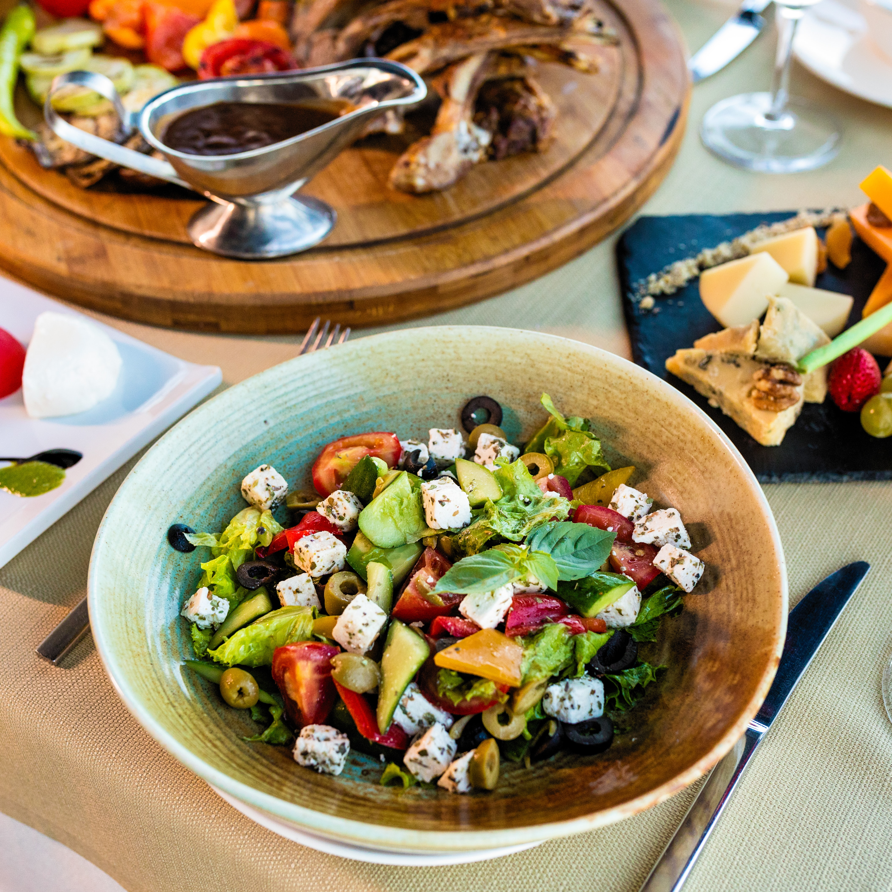

Griekse gerechten
Griekse salade
Een andere klassieker is de Griekse salade, oftewel choriatiki salata.
Een Griekse salade bestaat uit verse komkommer, zongerijpte tomaten,
olijven, rode uit en fetakaas. Hierover wordt nog een dressing van
olijfolie, azijn en citroensap gegoten. De Griekse salade wordt in
Griekenland zowel als voor- of bijgerecht gegeten. Het is vooral een
lekker en fris gerechtje op warme zomerdagen.
Tzatziki
Tzatziki is een echte klassieker.
Het is een Grieks voorgerecht met als basis yoghurt, komkommer en knoflook.
Het is enorm lekker op een knapperig stukje brood of als saus bij een Pita
Gyros maar het wordt ook gegeten als tussendoortje (hapje).